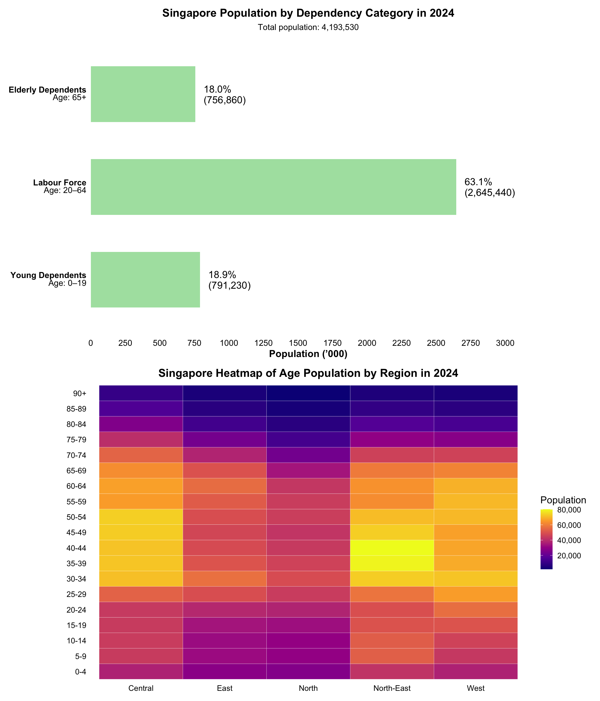
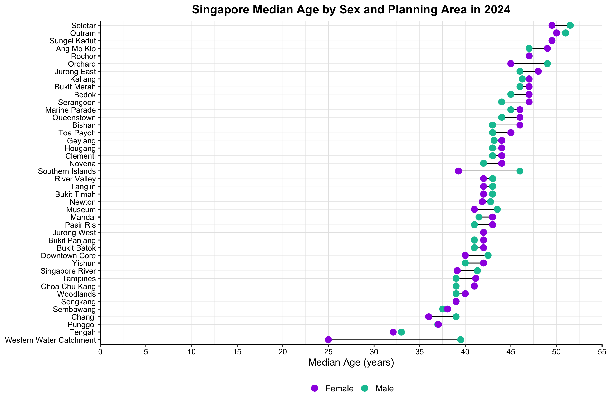

Show code
pacman::p_load(tidyverse, ggthemes,viridis,ggridges,ggrepel,patchwork, readr, dplyr, forcats, scales, ggtext, matrixStats)In this take‑home exercise, I’m assuming the role of graphical editor at a local online media outlet that publishes daily across digital platforms. I’ll employ a range of charts to illuminate Singapore’s 2024 demographic landscape, guiding you through my data‑cleaning process and my “Plot Approach” notes for each visualization. More than simply presenting figures, my overarching aim is to shape these charts and their accompanying narratives into a seamless, story‑driven article, just as you would see in a professional feature where every plot advances the data story and keeps readers engaged, all while ensuring honest, accurate and aesthetic plots.
Use below links to skip ahead.
Let’s first import packages and data for this article.
pacman::p_load(tidyverse, ggthemes,viridis,ggridges,ggrepel,patchwork, readr, dplyr, forcats, scales, ggtext, matrixStats)I have attained this data as per the handout’s requirement.
Source: Singstat
It would be under the ‘Population Trends’ tab titled Singapore Residents by Planning Area / Subzone, Single Year of Age and Sex, June 2024
# 3.1 Import
sgdemo2024 <- read_csv(("data/respopagesex2024.csv"), show_col_types = FALSE)glimpse(sgdemo2024)Rows: 60,424
Columns: 6
$ PA <chr> "Ang Mo Kio", "Ang Mo Kio", "Ang Mo Kio", "Ang Mo Kio", "Ang Mo K…
$ SZ <chr> "Ang Mo Kio Town Centre", "Ang Mo Kio Town Centre", "Ang Mo Kio T…
$ Age <chr> "0", "0", "1", "1", "2", "2", "3", "3", "4", "4", "5", "5", "6", …
$ Sex <chr> "Males", "Females", "Males", "Females", "Males", "Females", "Male…
$ Pop <dbl> 10, 10, 10, 10, 10, 10, 10, 10, 30, 10, 20, 10, 20, 30, 30, 10, 3…
$ Time <dbl> 2024, 2024, 2024, 2024, 2024, 2024, 2024, 2024, 2024, 2024, 2024,…Before we proceed with plotting, we will first need to ensure data is clean to ensure accurate plots.
By coercing Sex into a factor with a known level order to give full, explicit control over how it’s displayed in every plot and keeps the downstream code faster and more robust.
sgdemo2024 <- sgdemo2024 %>%
mutate(
Sex = factor(Sex, levels = c("Males", "Females"))
)# 4.1 Check for missing values and confirm none
missing_counts <- sgdemo2024 %>%
summarise_all(~ sum(is.na(.)))
if (all(unlist(missing_counts) == 0)) {
cat("✅ No missing values, proceed to the next check\n")
} else {
warning("⚠️ Missing values detected:")
print(missing_counts)
}✅ No missing values, proceed to the next checkdup_count <- sum(duplicated(sgdemo2024))
if (dup_count == 0) {
cat("✅ No duplicates, on to the next!\n")
} else {
warning("⚠️ Found duplicate rows:")
print(sgdemo2024[duplicated(sgdemo2024), ])
}✅ No duplicates, on to the next!Scrolling through the data, I found zero-population rows which simply means that no one of that age and sex lives in that subzone. If we add these to the plot, it will -
Hence, it is crucial to remove these rows
Step 1: Checking for zero-population rows.
# 1. Check for zero-population rows
zero_rows <- sgdemo2024 %>%
filter(Pop == 0)
if (nrow(zero_rows) > 0) {
cat("⚠️ Found", nrow(zero_rows), "rows with Pop == 0 (empty demographic cells):\n")
print(head(zero_rows)) # show a few examples
} else {
cat("✅ No zero‐population rows found.\n")
}⚠️ Found 23181 rows with Pop == 0 (empty demographic cells):
# A tibble: 6 × 6
PA SZ Age Sex Pop Time
<chr> <chr> <chr> <fct> <dbl> <dbl>
1 Ang Mo Kio Ang Mo Kio Town Centre 80 Males 0 2024
2 Ang Mo Kio Ang Mo Kio Town Centre 86 Males 0 2024
3 Ang Mo Kio Ang Mo Kio Town Centre 86 Females 0 2024
4 Ang Mo Kio Ang Mo Kio Town Centre 88 Males 0 2024
5 Ang Mo Kio Ang Mo Kio Town Centre 89 Males 0 2024
6 Ang Mo Kio Ang Mo Kio Town Centre 89 Females 0 2024In below code, we will remove the zero population rows and confirm the removal of those rows in the following code.
Step 2: Removing those zero-population rows.
# 2. Remove all zero‐population rows
sgdemo2024 <- sgdemo2024 %>%
filter(Pop > 0)Step 3: Confirm that all rows with zero-population has been removed.
# 3. Confirm removal
if (sum(sgdemo2024$Pop == 0) == 0) {
cat("✅ All zero‐population rows removed. Data is now focused on actual residents.\n")
}✅ All zero‐population rows removed. Data is now focused on actual residents.I will be converting this to a numeric value to plot my graphs. Afterwards, I will be labeling it during the plot. This is to ensure
Step 1: Convert the ‘90 & Over’ to integers.
# 1. Inspect column names to confirm they match expectations
print(colnames(sgdemo2024))[1] "PA" "SZ" "Age" "Sex" "Pop" "Time"# 2. Convert "Age" → numeric, mapping "90 & Over" → 90
sgdemo2024 <- sgdemo2024 %>%
mutate(
Age = parse_number(as.character(Age)),
Age = as.integer(Age)
)
# 3. Verify the transformation
age_stats <- sgdemo2024 %>%
summarise(
min_age = min(Age, na.rm = TRUE),
max_age = max(Age, na.rm = TRUE)
)
cat(sprintf(
"✅ Age conversion complete: now an integer from %d to %d.\n",
age_stats$min_age, age_stats$max_age
))✅ Age conversion complete: now an integer from 0 to 90.Step 2: Confirm that there are no more “90 & Over” entries in my data.
sum(sgdemo2024$Age == "90 & Over")[1] 0Step 3: Confirm the column type for Age is integer.
cat("Age column type:", class(sgdemo2024$Age), "\n")Age column type: integer Step 4: Ensure no NA in the column for Age.
na_count <- sum(is.na(sgdemo2024$Age))
cat("Number of NA in Age after parsing:", na_count, "\n")Number of NA in Age after parsing: 0 The below code chunk will aim to ensure that there is plot consistency and reproducibility.
# 1. Count subzone‐level totals (SZ == "Total")
n_sz_total <- sum(sgdemo2024$SZ == "Total", na.rm = TRUE)
cat("Rows with SZ == \"Total\":", n_sz_total, "\n")Rows with SZ == "Total": 0 # 2. Count any Age == NA (originally "Total")
n_age_na <- sum(is.na(sgdemo2024$Age))
cat("Rows with Age == NA (was \"Total\"):", n_age_na, "\n")Rows with Age == NA (was "Total"): 0 # 3. Count any Sex == "Total"
n_sex_total <- sum(as.character(sgdemo2024$Sex) == "Total", na.rm = TRUE)
cat("Rows with Sex == \"Total\":", n_sex_total, "\n\n")Rows with Sex == "Total": 0 # 4. If any totals remain, peek at them
if (n_sz_total + n_age_na + n_sex_total > 0) {
cat("⚠️ Example summary‐row(s):\n")
sgdemo2024 %>%
filter(
SZ == "Total" |
is.na(Age) |
as.character(Sex) == "Total"
) %>%
slice_head(n = 5) %>%
print()
} else {
cat("✅ No summary‐row entries remain. You’re all set.\n")
}✅ No summary‐row entries remain. You’re all set.# Define the expected order
expected_levels <- c("Males", "Females")
# Inspect the current factor levels
actual_levels <- levels(sgdemo2024$Sex)
cat("Current Sex levels:", paste(actual_levels, collapse = ", "), "\n")Current Sex levels: Males, Females # Compare and act
if (identical(actual_levels, expected_levels)) {
cat("✅ Sex factor levels are already correct (Males, Females).\n")
} else {
warning("⚠️ Sex factor levels are not as expected. Resetting to Males, Females.")
sgdemo2024 <- sgdemo2024 %>%
mutate(Sex = factor(Sex, levels = expected_levels))
cat("✅ Sex factor levels have been reset to:",
paste(levels(sgdemo2024$Sex), collapse = ", "), "\n")
}✅ Sex factor levels are already correct (Males, Females).Let’s confirm that there are no values ‘Total’ in any of our columns so that we know our dataset is purely the granular, inhabited cells. It is not only for housekeeping, but to safeguard my visualisations and summary statistics to truly reflect Singapore’s lived population in 2024.
# 1. Count subzone‐level totals (SZ == "Total")
n_sz_total <- sum(sgdemo2024$SZ == "Total", na.rm = TRUE)
cat("Rows with SZ == \"Total\":", n_sz_total, "\n")Rows with SZ == "Total": 0 # 2. Count any Age == NA (originally "Total")
n_age_na <- sum(is.na(sgdemo2024$Age))
cat("Rows with Age == NA (was \"Total\"):", n_age_na, "\n")Rows with Age == NA (was "Total"): 0 # 3. Count any Sex == "Total"
n_sex_total <- sum(as.character(sgdemo2024$Sex) == "Total", na.rm = TRUE)
cat("Rows with Sex == \"Total\":", n_sex_total, "\n\n")Rows with Sex == "Total": 0 # 4. If any totals remain, peek at them
if (n_sz_total + n_age_na + n_sex_total > 0) {
cat("⚠️ Example summary‐row(s):\n")
sgdemo2024 %>%
filter(
SZ == "Total" |
is.na(Age) |
as.character(Sex) == "Total"
) %>%
slice_head(n = 5) %>%
print()
} else {
cat("✅ No summary‐row entries remain. You’re all set.\n")
}✅ No summary‐row entries remain. You’re all set.We are finally done with cleaning the data and converting what’s needed to provide truthful and accurate data. Below is a quick summary of our freshly cleaned data!
# High‐Level Summary of Cleaned Data
summary_tbl <- sgdemo2024 %>%
summarise(
total_records = n(),
total_population = sum(Pop),
n_PAs = n_distinct(PA),
n_SZs = n_distinct(SZ)
)
# Print the summary table
print(summary_tbl)# A tibble: 1 × 4
total_records total_population n_PAs n_SZs
<int> <dbl> <int> <int>
1 37243 4193530 42 235# Confirmation message
cat(sprintf(
"✅ Data summary complete: %d records, total population %d, across %d PAs and %d subzones.\n",
summary_tbl$total_records,
summary_tbl$total_population,
summary_tbl$n_PAs,
summary_tbl$n_SZs
))✅ Data summary complete: 37243 records, total population 4193530, across 42 PAs and 235 subzones.# Show random rows
set.seed(2025)
sgdemo2024 %>%
slice_sample(prop = 0.01)# A tibble: 372 × 6
PA SZ Age Sex Pop Time
<chr> <chr> <int> <fct> <dbl> <dbl>
1 Tampines Tampines North 68 Males 70 2024
2 Toa Payoh Boon Teck 41 Females 80 2024
3 Toa Payoh Joo Seng 50 Males 60 2024
4 Bukit Panjang Dairy Farm 71 Males 30 2024
5 Ang Mo Kio Yio Chu Kang East 56 Males 40 2024
6 Queenstown Commonwealth 73 Males 30 2024
7 Bukit Merah Redhill 44 Males 80 2024
8 Clementi Sunset Way 68 Females 60 2024
9 Jurong West Jurong West Central 10 Females 300 2024
10 Bukit Timah Anak Bukit 51 Males 150 2024
# ℹ 362 more rowsIn the heart of Singapore, a quiet transformation is unfolding. Across our island, fewer children are filling playgrounds even as more elders fill community centres, a reflection of smaller birth cohorts and longer lifespans. The signs are everywhere, from merged primary schools making way for new community spaces to classrooms with dwindling enrollments. For many families, the rhythm of daily life now balances the laughter of young ones with the care of ageing parents. Neighbourhoods once bustling with young professionals now host their former residents in well‑worn flats, while newly built towns welcome bright‑eyed families beginning their Singapore story.
Technical Approach
For enhanced clarity, I’ve grouped the X‑axis into five‑year age bands and scaled the Y‑axis to population figures in thousands, keeping the chart readable despite its size. I have also calculated the percentages of each age group’s gender by percentage of the total population to give a better understanding of the size.
Visual Rationale
I also drew inspiration from an article on moving beyond blue‑for‑boys and pink‑for‑girls: instead, Telegraph UK uses purple and green, echoing the UK’s “Votes for Women” campaign and offering superior contrast. By rejecting these stereotypes, we open the door to more inclusive storytelling and richer understanding, ensuring that our visual language empowers individuals rather than boxes them into outdated expectations. I also removed the horizontal grids to avoid the chart looking cluttered and because it does not add any value.
# 1. Prepare pyramid data with overall‐pop percentages
pyr_df <- sgdemo2024 %>%
mutate(
AgeGroup = cut(
Age,
breaks = c(-1, seq(4, 89, 5), Inf),
labels = c(paste0(seq(0, 85, 5), "-", seq(4, 89, 5)), "90+"),
right = TRUE
)
) %>%
group_by(AgeGroup, Sex) %>%
summarise(Pop = sum(Pop), .groups = "drop") %>%
# Calculate percentage of male/female over the total population
ungroup() %>%
mutate(
total_all = sum(Pop),
PopK = Pop / 1000,
PopSignK = if_else(Sex == "Males", -PopK, PopK),
Perc = Pop / total_all * 100,
LabelPerc = sprintf("%.1f%%", Perc)
)
# 2. Compute subtitle text with grand totals
total_all <- sum(pyr_df$Pop)
total_males <- sum(pyr_df$Pop[pyr_df$Sex == "Males"])
total_females <- sum(pyr_df$Pop[pyr_df$Sex == "Females"])
pct_males <- total_males / total_all * 100
pct_females <- total_females / total_all * 100
subtitle_text <- paste0(
"Total population: ", scales::comma(total_all), "\n",
"Males: ", scales::comma(total_males), " (", sprintf("%.1f%%", pct_males), ") | ",
"Females: ", scales::comma(total_females), " (", sprintf("%.1f%%", pct_females), ")"
)
lim <- 180
breaks <- seq(-lim, lim, by = 10)
# 3. Plot
ggplot(pyr_df, aes(x = PopSignK, y = AgeGroup, fill = Sex)) +
geom_col(width = 0.8) +
# Male % labels
geom_text(
data = filter(pyr_df, Sex == "Males"),
aes(label = LabelPerc),
hjust = 1.1, nudge_x = -1.5,
size = 3.5, color = "black"
) +
# Female % labels
geom_text(
data = filter(pyr_df, Sex == "Females"),
aes(label = LabelPerc),
hjust = 0, nudge_x = 1.5,
size = 3.5, color = "black"
) +
scale_fill_manual(values = c("Males" = "#00C2A1", "Females" = "#9E00E3")) +
scale_x_continuous(
breaks = breaks,
labels = function(x) abs(x),
limits = c(-lim, lim),
expand = c(0, 0)
) +
geom_vline(xintercept = 0, color = "grey50", size = 0.3) +
coord_cartesian(clip = "off") +
labs(
title = "Singapore Population by Age Group in 2024",
subtitle = subtitle_text,
x = "Population (’000)",
y = "Age Group",
fill = NULL
) +
theme_minimal(base_size = 14) +
theme(
panel.border = element_rect(color = "black", fill = NA, size = 0.2),
plot.title = element_text(size = 18, face = "bold", hjust = 0.5),
plot.subtitle = element_text(size = 12, hjust = 0.5, margin = margin(b = 10)),
axis.text.y = element_text(size = 11, color = "black"),
axis.text.x = element_text(size = 11, color = "black"),
axis.title.x = element_text(face= "bold"),
axis.title.y = element_text(face= "bold"),
panel.grid.major.y = element_blank(),
panel.grid.minor = element_blank(),
legend.position = "bottom",
plot.margin = margin(5, 40, 5, 5)
)
Using Singapore’s statutory retirement age of 63 as the cutoff, shows children and adolescents (ages 0–18) making up just under 19% of residents, while those aged 64 and above account for about 26%. This leaves roughly 55% of Singaporeans in the working‑age bracket (ages 20–63), a majority tasked with supporting both younger and older dependents. This underscores growing pressures on public healthcare and social services, as well as the demands placed on the “sandwich generation” juggling childcare and eldercare.
Let’s turn our attention to the prime working‑age cohort, those between 20 and 54 years olds who make up nearly half of Singapore’s population (about 49%). This group remains the engine of our economy, with the largest concentrations clustered in the 30–44 bands, reflecting a strong mid‑career presence. Yet their growth has begun to plateau, a sign that fresh labour supply won’t keep expanding at the same pace. As this segment shoulders the financial weight of both children and older relatives, policymakers must look beyond merely filling jobs such as investing instead in skills development, flexible work arrangements and productivity enhancements to sustain economic momentum even as the pool of prime‑age workers levels off.
Technical Approach
Using the patchwork package, I assembled a composite figure that combines our national dependency‑cohort bar chart with a regional age‑by‑region heatmap. First, I mapped each Planning Area to its broader region (per the government’s official classification here), which allowed me to group and districts. With those region labels in place, I plotted the heatmap to visualise age‑group concentrations across the island. Defining regions upfront not only streamlined the heatmap’s construction but also sets us up for cleaner, more flexible plotting in subsequent analyses.
Visual Rationale
Building on the insights from our population pyramid, I wanted to drill down further granularity into the so‑called “Sandwich Generation,” whose members juggle childcare and eldercare. The dependency‑cohort chart quantifies exactly how many young and elderly dependents each 20–64 age bracket supports. I removed the grids for a clean look as I only have 3 categories and labels are clear. The main focus are the bar lengths to and adding grid-lines would draw attention away from an already simple bar graph. Recalling Lesson 2: Practical Guides for Using Colour in Charts, I’ve kept the dependency‑cohort bars in the same soft colour palette to maintain visual harmony and avoid overloading the viewer.
The regional heatmap reveals where those age groups cluster regionally. Together, these visuals highlight both the scale of intergenerational care pressures and the specific districts where urban planners and policymakers must prioritise childcare facilities, eldercare services, and family‑friendly infrastructure.
# Define PA → Region lookup
central <- c("Bishan","Bukit Merah","Bukit Timah","Downtown Core","Geylang",
"Kallang","Marina East","Marina South","Marine Parade","Museum",
"Newton","Novena","Orchard","Outram","Queenstown","River Valley",
"Rochor","Singapore River","Southern Islands","Straits View",
"Tanglin","Toa Payoh")
east <- c("Bedok","Changi","Changi Bay","Pasir Ris","Paya Lebar","Tampines")
north <- c("Central Water Catchment","Lim Chu Kang","Mandai","Sembawang",
"Simpang","Sungei Kadut","Woodlands","Yishun")
north_east <- c("Ang Mo Kio","Hougang","North-Eastern Islands","Punggol",
"Seletar","Sengkang","Serangoon")
west <- c("Boon Lay","Bukit Batok","Bukit Panjang","Choa Chu Kang",
"Clementi","Jurong East","Jurong West","Pioneer","Tengah",
"Tuas","Western Islands","Western Water Catchment")
# 1. Cohort bar data & plot
cohort_df <- sgdemo2024 %>%
mutate(
CohortKey = case_when(
Age <= 19 ~ "young",
Age >= 65 ~ "elderly",
TRUE ~ "labour"
)
) %>%
group_by(CohortKey) %>%
summarise(TotalPop = sum(Pop), .groups = "drop") %>%
mutate(
TotalK = TotalPop/1000,
Perc = TotalPop/sum(TotalPop)*100,
LabelFull = paste0(sprintf("%.1f%%", Perc), "\n(", comma(TotalPop),")"),
CohortLabel = case_when(
CohortKey=="young" ~ "**Young Dependents**<br>Age: 0–19",
CohortKey=="labour" ~ "**Labour Force**<br>Age: 20–64",
CohortKey=="elderly" ~ "**Elderly Dependents**<br>Age: 65+"
) %>%
factor(levels=c(
"**Young Dependents**<br>Age: 0–19",
"**Labour Force**<br>Age: 20–64",
"**Elderly Dependents**<br>Age: 65+"
))
)
grand_total <- sum(cohort_df$TotalPop)
max_k <- 3000
nudge_amt <- max_k * 0.02
p_cohort <- ggplot(cohort_df, aes(TotalK, CohortLabel)) +
geom_col(fill="#ACE1AF", width=0.6) +
geom_text(aes(label=LabelFull),
hjust=0, nudge_x=nudge_amt, size=5,
lineheight=0.9, color="black") +
scale_x_continuous(
name="Population (’000)",
breaks=seq(0,max_k,250),
limits=c(0,max_k),
expand=expansion(mult=c(0,0.05)),
labels=function(x)x
) +
labs(
title = "Singapore Population by Dependency Category in 2024",
subtitle = paste0("Total population: ", comma(grand_total)),
x = NULL, y = NULL
) +
theme_minimal(base_size=14) +
theme(
plot.title = element_text(size=16, face="bold", hjust=0.5),
plot.subtitle = element_text(size=12, hjust=0.5, margin=margin(b=10)),
axis.text.y = element_markdown(size=12, color="black"),
axis.text.x = element_text(size=12, color="black"),
axis.title.x = element_text(face= "bold"),
panel.grid = element_blank(),
legend.position = "none"
)
# 2. Heatmap data & plot
tile_df <- sgdemo2024 %>%
mutate(
Region = case_when(
PA %in% central ~ "Central",
PA %in% east ~ "East",
PA %in% north ~ "North",
PA %in% north_east ~ "North-East",
PA %in% west ~ "West"
),
AgeBand = cut(
Age,
breaks = c(seq(0,90,5), Inf),
right = FALSE,
labels = c(paste0(seq(0,85,5), "-", seq(4,89,5)), "90+")
)
) %>%
group_by(Region, AgeBand) %>%
summarise(Pop = sum(Pop), .groups = "drop") %>%
mutate(
Region = factor(Region, levels=c("Central","East","North","North-East","West")),
AgeBand = factor(AgeBand, levels=c(paste0(seq(0,85,5), "-", seq(4,89,5)), "90+"))
)
p_heat <- ggplot(tile_df, aes(Region, AgeBand, fill=Pop)) +
geom_tile(color="white") +
scale_fill_viridis_c(name="Population", option="C", labels=comma) +
labs(title = "Singapore Heatmap of Age Population by Region in 2024") +
theme_minimal(base_size=14) +
theme(
plot.title = element_text(size=16, face="bold", hjust=0.5),
axis.text.x = element_text(color="black"),
axis.text.y = element_text(color="black"),
axis.title.x = element_blank(),
axis.title.y = element_blank(),
panel.grid = element_blank(),
legend.position = "right",
legend.justification = "center"
)
# 3. Stack cohort on top, heatmap below
p_cohort / p_heat +
plot_layout(heights=c(1,1))
Caught between caring for aging parents and raising children, Singapore’s “sandwich generation” faces mounting pressure as 37 dependents fall on every 100 working‑age adults. With 63.1% of residents aged 20–64, these mid‑career adults must support 18.9% young dependents (ages 0–19) and 18.0% elderly dependents (65+), straining both family resources and national social services.
Our regional heatmap further reveals where this tension is most acute: the Central and North‑East districts not only concentrate the largest cohorts of prime‑age workers (35–44) but also show darker shades in the early senior bands (65–74), indicating dual hotspots of childcare and eldercare demand. In contrast, the North region’s lighter tones across all age bands point to relatively lower service needs there. Addressing the sandwich generation’s unique challenges will require integrated policies by expanding affordable childcare in family‑dense precincts, scaling up eldercare support in senior‑heavy districts, and fostering workplace flexibility to ensure that today’s caregivers are themselves cared for.
Technical Approach
Building on our earlier maps and cohort charts, I began by calculating the median age for each Planning Area, split by sex. I then reshaped the results into a “wide” format so each area has two columns, one for female median age and one for male, and ordered the Planning Areas by their overall median (average of the two sexes).
Visual Rationale
This dumbbell plot naturally extends our story from a national dependency load and regional heatmap to the local “midpoints” of each community. By placing female and male medians side by side, we immediately see both overall age trends and sex‑specific gaps: established estates cluster toward the upper end of the age scale, while newer towns remain lower. The consistent purple‑and‑green palette ties back to our earlier rationale in population pyramid. Both horizontal and veritcal grids are added to guide users to link Planning Areas and Median Age. However, it has been kept soft enough to not clutter the plot, especially since the dumbell itself has a line in between the male and female. Ultimately, this chart highlights where generational midpoints and by extension, community needs vary most sharply between men and women, guiding targeted policy and infrastructure decisions at the Planning Area level.
# 1. Compute weighted median age by PA & sex
med_age <- sgdemo2024 %>%
group_by(PA, Sex) %>%
summarise(
MedAge = matrixStats::weightedMedian(Age, w = Pop),
.groups = "drop"
) %>%
pivot_wider(
names_from = Sex,
values_from = MedAge
) %>%
rename(Male = Males, Female = Females) %>%
arrange((Male + Female) / 2) %>%
mutate(PA = factor(PA, levels = PA))
# 2. Plot static dumbbell-like chart with legend on the right
ggplot(med_age, aes(y = PA)) +
# a) connecting lines
geom_segment(aes(x = Male, xend = Female, yend = PA),
color = "black", size = 0.5) +
# b) male points
geom_point(aes(x = Male, color = "Male"), size = 4) +
# c) female points
geom_point(aes(x = Female, color = "Female"), size = 4) +
# 3. Scale and legend
scale_color_manual(
values = c("Male" = "#00C2A1", "Female" = "#9E00E3")
) +
scale_x_continuous(
breaks = seq(0, 55, by = 5),
labels = seq(0, 55, by = 5),
limits = c(0, 55),
expand = c(0, 0)
) +
labs(
title = "Singapore Median Age by Sex and Planning Area in 2024",
x = "Median Age (years)",
y = NULL,
color = NULL
) +
theme_classic(base_size = 14) +
theme(
plot.title = element_text(hjust = 0.5, face = "bold"),
axis.text.x = element_text(color = "black", size = 11),
axis.title.x = element_text(size = 14),
axis.text.y = element_text(color = "black", size = 11),
panel.grid.major.x = element_line(color = "grey90", size = 0.2),
panel.grid.minor.x = element_line(color = "grey90", size = 0.2),
panel.grid.major.y = element_line(color = "grey90", size = 0.2),
panel.grid.minor.y = element_line(color = "grey90", size = 0.2),
legend.position = "bottom",
legend.justification = "top",
legend.text = element_text(size = 12)
)
Building on our dependency‑cohort and regional heatmap analyses, examining the median age across Singapore’s Planning Areas reveals where communities skew younger or older at their cores. Older estates such as Queenstown and Bukit Merah register median ages in the mid 40s, reflecting long‑established neighbourhoods and a higher share of empty‑nesters. In contrast, newer towns like Punggol, Sengkang and Tengah show median ages in the low 30s, driven by young families and recent housing launches. Heartland hubs such as Jurong East and Tampines sit in between, with medians around 36–38 years, capturing both working professionals and a growing elder segment. These median‑age patterns not only mirror the “Sandwich Generation” pressures we identified where mid‑career adults balance dependents on either side of the age spectrum, but also pinpoint where planners must tailor services: youth‑oriented amenities in family‑heavy districts and age‑friendly infrastructure in more mature estates.
Together, our analysis paints a comprehensive portrait of Singapore’s evolving demographic landscape: declining birth rates have narrowed the population’s base while increased longevity has expanded its apex, leaving 37 dependents, 20 young and 17 elderly for every 100 working‑age adults. Regionally, Central and North‑East districts emerge as dual hotspots of both prime‑age workers and burgeoning senior cohorts, intensifying the “sandwich generation” pressures on mid‑career adults who juggle childcare and eldercare. Across Planning Areas, median ages range from the low 30s in growth towns like Punggol and Tengah to the mid‑40s in mature estates such as Queenstown and Bukit Merah, with notable sex‑specific gaps highlighted in our dumbbell plot. These patterns underscore the urgency of place‑based strategies by expanding affordable childcare in youthful precincts, scaling up geriatric care in senior‑dense districts, and tailoring urban infrastructure to each community’s generational midpoint. By aligning services with these demographic realities, Singapore can ensure that every cohort, young, working‑age and elderly receives the support it needs for a resilient, inclusive future.